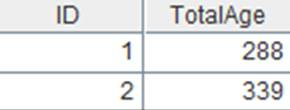
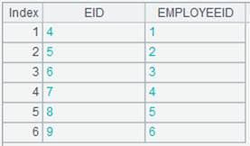

Description:
List the fragmentation information of a specified table with cursors.
Syntax:
|
ifx_cursor(ifxconn, sql; k1:k2) |
Query data in fragmented files from k1 to k2 using a SQL statement. |
|
|
ifx_cursor(ifxconn, table:where, f:alias,...; k1:k2) |
List the fragmentation information of table table with cursors and search fragmented file k1 and fragmented file k2 according to the where condition. Parameter f is the table’s column name, and parameter alias is the column’s another name. Parameter where can be omitted; parameter k2 will be omitted if parameter k1 is absent; only search fragmented file k1 when k2 is absent. |
|
|
ifx_cursor(ifxconn, sql; ifxCursor:f2) |
Query data over the fragmented file specified by the parameter ifxCursor quries with a SQL statement; parameter f2 is the fragmented field, which, if absent, is the fragmented field of the fragmented file ifxCursor. |
|
|
ifx_ cursor(ifxconn, table:where, f:alias,...; ifxCursor:f2) |
Query table table according to where condition over the fragmented file specified by parameter ifxCursor; parameter f is the table’s column name and parameter alias is its another name; f2 is the fragmented field, which, if absent, is the fragmented field of the fragmented file ifxCursor. |
|
Note:
InformixCli external library function (See External Library Guide).
List the fragmentation information of a specified table with cursors.
Parameter:
|
ifxconn |
Ifxconn object. |
|
sql |
A SQL statement. |
|
table |
A table being fragmented. |
|
where |
Query condition; can be omitted. |
|
f |
A column name of a fragmented file. |
|
alias |
Another name of column f. |
|
k1 |
A fragmented file; can be omitted. |
|
k2 |
A fragmented file; can be omitted. |
|
ifxCursor |
The fragmented file recorded with cursor. |
|
f2 |
A fragmented field; can be omitted. |
Option:
|
@o |
Allow unordered data. |
|
@f |
Require data to be ordered. |
|
@m |
Enable the use of multiple channels. |
Return value:
Cursor
Example:
|
|
A |
|
|
1 |
=ifx_conn("jdbc:informix-sqli:192.168.0.3:9088/tpch:;DB_LOCALE=en_us.819;CLIENT_LOCALE=en_us.57372;NEWCODESET=GBK,8859-1,819;informixserver=tpch&user=informix&pwd=informix";"frag.txt") |
Connect to Informix database. |
|
2 |
=ifx_takefrag(A1) |
|
|
3 |
=ifx_cursor(A1,"select L_ORDERKEY,L_RETURNFLAG,L_LINESTATUS,L_QUANTITY,L_EXTENDEDPRICE,L_DISCOUNT,L_TAX from lineitem";2:3) |
Query data in the 2nd and the 3rd fragmented files through a SQL statement. |
|
4 |
=A3.fetch(10000) |
 |
|
5 |
=ifx_cursor@o(A1,"lineitem":"L_LINESTATUS='F'","L_TAX":"tax",L_LINESTATUS;2:3) |
Query the 2nd and the 3rd fragmented files of table lineitem according to condition L_LINESTATUS='F'; with @o option used, get column L_TAX, whose alias is tax, and column L_linestatus in an unordered way. |
|
6 |
=A5.fetch(10000) |
 |
|
7 |
=ifx_cursor@o(A1,"select skip 0 first 30000 L_ORDERKEY,L_RETURNFLAG,L_LINESTATUS,L_QUANTITY,L_EXTENDEDPRICE,L_DISCOUNT,L_TAX from lineitem";A3:"l_orderkey") |
Query the same fragmented file as that in A3 through a SQL statement, with the fragmented field as l_orderkey, which can be omitted because it is the same as that of A3’s fragmented file. |
|
8 |
=A7.fetch(10000) |
|
|
9 |
=ifx_cursor@o(A1,"lineitem":"L_LINESTATUS='F'","L_TAX":"tax",L_LINESTATUS; A5:"l_orderkey") |
With @o option used, get column L_TAX, whose alias is tax, from one of the fragmented file of table lineitem, which is the same as A5’s fragmented file, and column L_LINESTATUS, according to condition L_LINESTATUS='F' in an unordered way; the fragmented field is l_orderkey, which can be omitted because it is the same as that of A5’s fragmented file. |
|
10 |
=A9.fetch(10000) |
|